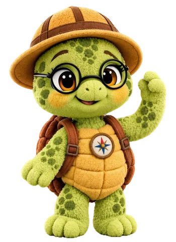
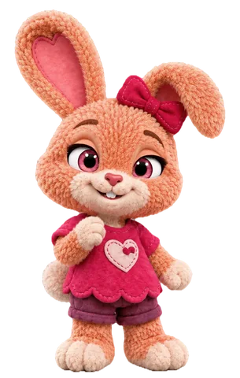
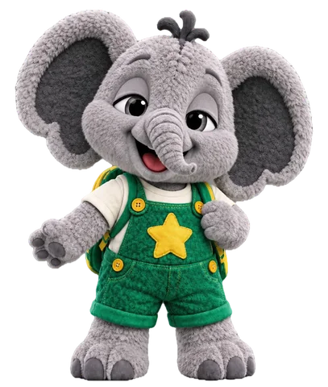

Things to do tonight
27 short activities for ages 2 to 5, made from things you already have at home. Each one has steps, what you might notice and ways to make it easier or harder.

Find one that fits
Pick an age and a friend. Open any card to see the steps.
Name-It WalkBooker · LEARN
You need
- Shoes
- A stroller or carrier, if you use one
Steps
- Go for a short walk outside, or around your home.
- When your child points or looks at something, name it: "A bird! A little brown bird."
- Add one more word each time: "The bird is flying. Up, up!"
- Pause and let your child point to the next thing. Follow their lead.
What you might notice
- What your child points at, and whether they look back at you to share it.
- Words or sounds they try to copy.
Make it easier: Walk around one room and name what you touch.
Make it a stretch: For twos, ask "What is that?" and wait before naming it.
Every body can join: Describe what you pass out loud for a child with low vision, and let them touch safe things.
Safety: Hold hands near streets and driveways.
Say: “Booker says: I see it! Let's name it!”

Feelings MirrorLumi · BELONG
Read the transcript: Feelings Mirror
[Title card] Futures Friends. Feelings: Feeling Faces. with Lumi.
Lumi: Hi, friends. I'm Lumi.
Lumi: Let's make feeling faces. Copy me!
Lumi: Happy!
Lumi: Sad.
Lumi: Surprised!
Lumi: Sleepy...
Lumi: Every feeling is okay.
[End card] Great faces, friends! Learn. Move. Explore. Belong. A Futures Friends play-along video.
You need
- A mirror, or just your face
Steps
- Sit together in front of the mirror.
- Make a big happy face and say, "Happy!" Wait for your child to copy.
- Try a sad face, a surprised face and a sleepy face.
- Ask, "Can you show me happy?" and cheer any try.
What you might notice
- Whether your child watches your face closely and tries to copy it.
- Which feelings they seem to know already.
Make it easier: Use only happy and sad for younger twos.
Make it a stretch: For twos, tell a tiny story: "The ball rolled away. How do I feel?"
Every body can join: If mirrors are too much, use a picture book with clear faces.
Say: “Lumi says: Feelings are okay. What does your face say?”
Smell the Flower, Blow the CandleLumi · BELONG
Read the transcript: Smell the Flower, Blow the Candle
[Title card] Futures Friends. Calm corner: Smell the Flower, Blow the Candle. Breathe with Lumi.
Lumi: Hi, friends. I'm Lumi.
Lumi: When feelings get big, we can breathe together.
Lumi: Here's my flower... and my candle.
Lumi: Smell the flower...
Lumi: Blow the candle...
Lumi: How does your body feel now?
[End card] Calm breathing, friends! Learn. Move. Explore. Belong. A Futures Friends play-along video.
You need
- Nothing, or one finger held up as a candle
Steps
- Hold up one hand like a flower and the other finger like a candle.
- Smell the flower: breathe in slowly through your nose.
- Blow the candle: breathe out slowly through your mouth.
- Do it three times together, slowly. Then ask, "How does your body feel now?"
What you might notice
- Whether your child can slow their breath down, even a little.
- When they start to use it on their own, like when they are upset.
Make it easier: Twos can just copy the blowing part.
Make it a stretch: Older children can lead it for you, or try four slow breaths.
Every body can join: Blow on a feather or a pinwheel if the idea of a pretend candle is hard.
Safety: Offer it, never force it. If your child feels dizzy, breathe normally and sit.
Say: “Lumi says: Smell the flower. Blow the candle.”
Water Bowl SplashZuri · EXPLORE
You need
- A shallow plastic bowl or the bathtub
- Plastic cups and spoons
- A towel
Steps
- Put a little water in a shallow bowl on a towel, or in the bath.
- Pour, scoop and splash together with cups.
- Find things from around the house that float or sink, and guess before you drop each one in.
- Pour the water out together and dry hands.
What you might notice
- How your child pours and scoops, and whether they try the same thing again to see what happens.
- Guesses and words like "more," "full" or "empty."
Make it easier: Just pour and splash for younger twos.
Make it a stretch: For threes, sort the things into "floats" and "sinks" piles.
Every body can join: Do it at a table at seated or wheelchair height.
Safety: Stay within arm's reach and never leave a child alone near any water, even a little. Empty the bowl when you are done.
Say: “Zuri says: Pour it, scoop it! What floats?”

Bubble ChaseBop · MOVE
Read the transcript: Bubble Chase
[Title card] Futures Friends. Go outside: Bubble Chase. Move along with Bop.
Bop: Hi, friends! I'm Bop.
Bop: Bubbles! Let's pop them!
Bop: Reach up high!
Bop: Now pop one with a clap!
Bop: Pop one with your trunk!
Bop: Bubble break. One big breath.
[End card] Great popping, friends! Learn. Move. Explore. Belong. A Futures Friends play-along video.
You need
- Bubbles: dish soap and water in a cup, and a bent pipe cleaner or a straw
Steps
- Find an open, flat spot outside. Stand so the wind blows the bubbles toward your child.
- Blow bubbles and invite your child to reach, pop and chase them.
- Change the game: pop with a clap, a toe, an elbow.
- When the bubbles run out, breathe together and get a drink of water.
What you might notice
- How your child moves: reaching up, stepping, running, stopping.
Make it easier: Blow bubbles close to a child who sits, so they can pop them from where they are.
Make it a stretch: Older children can blow the bubbles while you chase.
Every body can join: Let a child who dislikes the feel of bubbles pop them with a spoon.
Safety: Keep bubble solution away from eyes and mouths, and wipe up spills on hard floors.
Say: “Ready? Bop & Go! Pop them up high, pop them down low!”
Kitchen ParadeBop · MOVE
You need
- A pot or plastic container
- A wooden or plastic spoon
Steps
- Give your child the pot and spoon as a drum.
- Play a slow beat and march slowly. Play a fast beat and march fast.
- Take turns being the leader.
- Finish with a loud boom and a hug.
What you might notice
- Whether your child changes speed when the beat changes.
Make it easier: Sit and drum on a tray or table, or dance with arms only.
Make it a stretch: Add a "freeze" when the drum stops.
Every body can join: Put a cloth over the pot for quieter drumming.
Safety: Keep the floor clear of toys and wet spots.
Say: “Ready? Bop & Go! Tap, tap, march!”
Animal WalksBop · MOVE
Read the transcript: Animal Walks
[Title card] Futures Friends. Movement break: Animal Walks. Move along with Bop.
[On screen: picture cards show each move as Bop names it: Elephant, Bear, Bunny, Hop like a bunny.]
Bop: Hi, friends! I'm Bop.
Bop: Let's do Animal Walks!
Bop: Which animal will you be?
Bop: I'll be an elephant first.
Bop: Big, heavy steps!
Bop: Switch! Now walk like a big bear!
Bop: Can you walk like a bear?
Bop: Stand up tall with me.
Bop: Switch! Now hop like a little bunny!
Bop: Small hops. Ready?
Bop: Can you hop like a bunny?
Bop: Hop with me!
[Upbeat music]
[End card] Great walking, friends! Learn. Move. Explore. Belong. A Futures Friends movement break.
You need
- A hallway or a cleared space
Steps
- Pick an animal: Booker bear, Lumi bunny, Zuri turtle or Bop elephant.
- Move like that animal from one room to the next.
- Call "Switch!" and let your child pick the next animal.
- Try a slow animal and a fast one.
What you might notice
- Which ways of moving your child chooses, and how they change speed.
Make it easier: Any movement counts: wiggle, roll, crawl or wheel.
Make it a stretch: Add a sound for each animal, or go backward.
Every body can join: Use only arms and face to be the animal from a chair.
Safety: Check the floor for slippery spots and stay clear of stairs.
Say: “Ready? Bop & Go! Which animal are you today?”
Sock TossBop · MOVE
You need
- Clean socks rolled into balls
- A laundry basket
Steps
- Roll a few pairs of clean socks into soft balls.
- Set the basket a few steps away.
- Toss, drop or roll each one toward the basket.
- Count them together as you pick them up.
What you might notice
- How your child throws: overhand, underhand, or a drop.
- Whether they count along with you.
Make it easier: Hold the basket close, or drop the socks in from a seat.
Make it a stretch: Step back one big step after each round.
Every body can join: Roll socks along the floor into a hamper on its side.
Say: “Ready? Bop & Go! Toss it, drop it, roll it!”
Picture WalkBooker · LEARN
You need
- Any picture book your child has not seen
Steps
- Before reading, turn the pages slowly and only look at the pictures.
- Ask, "What do you see? What do you think is happening?"
- Repeat your child's words and add one: "A dog. A muddy dog!"
- Then read the book and see if your guesses were right.
What you might notice
- How many words your child uses to tell about a picture.
- Whether they guess what might happen next.
Make it easier: Point and name for younger twos.
Make it a stretch: For threes, ask "What happens next?" before you turn each page.
Every body can join: Describe each picture in words for a child with low vision.
Say: “Booker says: Look at the picture first. What could it be?”
One Toy at a TimeBop · MOVE
You need
- Toys that are out
- Two or three bins or shelf spots
Steps
- Give each kind of toy a "home": a bin for blocks, a shelf spot for books.
- When the mess looks too big, say: "We can't do it all at once. But we can do one thing."
- Pick up one toy each and take it home: "Pick it up, put it back. Stomp, stomp! Clap, clap!"
- Keep going until every toy is home. Ask, "What did you do by yourself?"
What you might notice
- Whether your child matches toys to their homes.
- How they react when a big job gets smaller.
Make it easier: One bin, and walk with your child for each toy.
Make it a stretch: Let your child be the "label checker" who makes sure each toy is home.
Every body can join: Bring the bin to a child who sits, so they can drop toys in from their seat.
Say: “Pick it up, put it back. Stomp, stomp! Clap, clap!”
Pillow Fort CalmLumi · BELONG
You need
- Pillows
- A blanket
- A soft toy
Steps
- Build a small, low fort together from pillows and a blanket.
- Crawl in together with the soft toy.
- Take three slow breaths: smell the flower, blow the candle.
- Tell each other one thing you noticed today.
What you might notice
- What your child does when things are quiet and close.
- Whether they come back to the fort on their own when they need calm.
Make it easier: Sit next to the fort and just put a hand inside.
Make it a stretch: Make it your child's "calm corner" and let them decorate it.
Every body can join: Skip the fort and snuggle on the couch with a blanket if small spaces are hard.
Safety: Keep the fort low and open at the front so you can always see your child.
Say: “Lumi says: Calm is a place you can build.”
Color Look and TasteZuri · EXPLORE
You need
- Two foods of one color from tonight's meal, cut safely (for example, strawberries cut small and soft cooked carrots)
Steps
- Notice: put the two foods on a plate. Ask, "What do you see? What do you smell?"
- Predict: "Will it be crunchy or soft? Sweet or sour?"
- Try: your child can look, touch, sniff, lick, taste or pass. Every way of exploring counts.
- Compare: "Was it what you thought? How are they different?"
What you might notice
- The words your child uses to describe food: soft, crunchy, juicy, cold.
- Which senses they like to explore with first.
Make it easier: Just look and touch, with no tasting needed.
Make it a stretch: Older children can draw what they tasted.
Every body can join: Serve soft or mashed versions for a child who needs them, and follow every allergy plan.
Safety: Cut round foods like grapes and blueberries into small pieces, and serve hard vegetables cooked soft. Never require a taste.
Say: “Zuri says: Notice, predict, try, compare!”
Brave Reader StepsBooker · LEARN
Read the transcript: Brave Reader Steps
[Title card] Futures Friends. Read along: Brave Reader Steps. Read along with Booker.
Booker: Hi, friends! I'm Booker.
Booker: A new word? Let's be brave readers!
[On screen: a word card with a red kite picture from Booker's book, the word KITE in big letters and kite in small letters under it.]
Booker: First, look at the picture for a clue.
[Step 1, Look at the picture: the kite picture lights up. Clue!]
Booker: Say the first sound... kuh, kuh, kuh.
[Step 2, Say the first sound: the letter K lights up, with /k/ under it.]
Booker: Slide your finger, slow as honey.
[Step 3, Slide your finger: a paw slides under K, I, T, E. K, I and T light up as their sounds appear: /k/ ... /ī/ ... /t/. The E stays pale: the e is quiet.]
Booker: Kite!
[Step 4, Read the word: the whole word KITE lights up.]
Booker: Not quite? That's okay.
Booker: Big breath. Brave heart. I can try again!
[On screen: Big breath. Brave heart. I can try again!]
[End card] Brave reading, friends! Learn. Move. Explore. Belong. A Futures Friends play-along video.
You need
- Three scraps of paper
- A crayon
Steps
- Draw a sun, a cat and a kite, and write the word under each: SUN, CAT, KITE.
- Start with CAT. Point to each letter and say its sound, /k/ /a/ /t/, then blend: "cat."
- Hold up KITE and look at all four letters. Say, "In kite, the quiet e helps i say its name." Slide a finger under the word: /k/ /ī/ /t/, then blend: "kite."
- Talk about the picture and what the word means. Then do the brave cheer and try SUN.
What you might notice
- Whether your child looks at every letter, not only the first one.
- Which letter sounds they already know.
Make it easier: Just name the pictures; reading words can wait.
Make it a stretch: Teach another word with the quiet e, like bike or time, then read it together.
Every body can join: Make the letters big and bold, or trace them in the air together.
Say: “Big breath. Brave heart. I can try again!”
Ice DetectivesZuri · EXPLORE
You need
- Three ice cubes
- Three small plates
- A paper towel or mitten
Steps
- Put one plate in a sunny spot and one in a shady spot. Your child holds the third in a paper towel.
- Guess together: "Which one will melt first?"
- Watch for 3 minutes and take turns saying what you notice.
- Say Zuri's finding: "Warm makes ice melt. Cold makes water freeze."
What you might notice
- Whether your child makes a guess and checks it.
- Comparing words: bigger, smaller, faster, slower.
Make it easier: Compare two plates only.
Make it a stretch: Draw a before and an after picture.
Every body can join: Let your child feel the plates to tell warm from cool.
Safety: Keep ice out of mouths.
Say: “I wonder, I wonder... what happens if we try?”
Freeze and Try AgainBop · MOVE
Read the transcript: Freeze and Try Again
[Title card] Futures Friends. Movement break: Freeze & Try Again. Move along with Bop.
[On screen: picture cards show each move as Bop names it: Dance!, Freeze!, Try again!, March.]
Bop: Hi, friends! I'm Bop.
Bop: Let's play Freeze and Try Again!
Bop: When the music stops... freeze!
[Bop hums along to the music]
[Music stops] Freeze!
[Bop giggles]
Bop: Now try again!
[Bop hums along to the music]
[Music stops] Freeze!
[Bop giggles]
Bop: Now try again!
Bop: March with me, knees up high!
[Bop hums along to the music]
[Music stops] Freeze!
Bop: Now try again!
[Bop giggles and hums along to the music]
[End card] Great freezing, friends! Learn. Move. Explore. Belong. A Futures Friends movement break.
You need
- Music, or your voice
Steps
- Move any way you like while the music plays or you sing.
- When the music stops, freeze like a statue.
- Wiggle out of it and try again.
- Let your child be the one who stops the music.
What you might notice
- How your child stops their body when the music stops.
Make it easier: Freeze just your hands, or just your face.
Make it a stretch: Freeze in a funny shape you call out: tall, tiny, wide.
Every body can join: Wave a hand or flick the lights as the signal if your child cannot hear the music stop.
Say: “Freeze! Now try again.”
Shadow DanceZuri · EXPLORE
You need
- A flashlight, a lamp or a sunny window
- A blank wall
Steps
- Dim the room a little and shine the light toward a wall.
- Stand between the light and the wall and make your shadow wave, jump and spin.
- Ask your child to copy your shadow, then swap.
- Make a tall shadow, a tiny shadow and a wiggly shadow. Wonder: what made it change?
What you might notice
- Whether your child figures out that moving closer to the light makes a bigger shadow.
Make it easier: Make shadow hands and animals while seated.
Make it a stretch: Trace a shadow on paper taped to the wall.
Every body can join: Keep the room only a little dim for a child who dislikes the dark.
Safety: Never shine a light into anyone's eyes.
Say: “Zuri says: I notice my shadow got bigger!”
Feeling Faces and Inviting WordsLumi · BELONG
Read the transcript: Feeling Faces and Inviting Words
[Title card] Futures Friends. Feelings: Feeling Faces. with Lumi.
Lumi: Hi, friends. I'm Lumi.
Lumi: Let's make feeling faces. Copy me!
Lumi: Happy!
Lumi: Sad.
Lumi: Surprised!
Lumi: Sleepy...
Lumi: Every feeling is okay.
[End card] Great faces, friends! Learn. Move. Explore. Belong. A Futures Friends play-along video.
You need
- A mirror, if you have one
Steps
- Make five faces together: happy, lonely, worried, calm and proud. Say each word.
- Ask, "When did you feel proud this week?"
- Practice Lumi's inviting words: "Do you want to play with me?" "Yes!" Swap roles.
- Finish with: "Look. Listen. Lend a hand."
What you might notice
- Which feeling words your child uses on their own.
- Whether they notice how someone else feels.
Make it easier: Use only happy, worried and calm.
Make it a stretch: Show a feeling with your body only and guess.
Every body can join: Use a picture book with clear faces instead of a mirror.
Say: “Lumi says: Look. Listen. Lend a hand.”
Front, Back, Top, Sparkle!Booker · LEARN
You need
- A toothbrush
- Fluoride toothpaste: a rice-grain smear under age 3, a pea-sized amount from age 3
Steps
- Tell the story: "The sparkle hides on the front, the back and the top of every tooth."
- Brush the fronts in small circles while you say "Front!"
- Then "Back!" and "Top!"
- Finish with a big smile in the mirror: "Sparkle!" Spit, don't swallow.
What you might notice
- How much your child wants to do on their own. Grown-ups still help brush at this age.
Make it easier: Brush while sitting on your lap.
Make it a stretch: Let your child brush first, then you finish.
Every body can join: Use a thick-handled brush, or brush with water first if the taste of toothpaste is hard.
Safety: Use the amounts above and stay with your child the whole time.
Say: “Booker says: Front, back, top, sparkle!”
Pillow BowlingBop · MOVE
You need
- Plastic cups or empty boxes
- A soft ball or rolled-up socks
Steps
- Stack the cups or boxes into a little tower.
- Roll the ball to knock them down.
- Build it up again together and count how many fell.
- Take turns and cheer for every try.
What you might notice
- Whether your child aims, and changes how they roll after a miss.
Make it easier: Sit close and push the ball gently.
Make it a stretch: Step farther back, or make a taller tower.
Every body can join: Roll the ball down a ramp made from a book on a pillow.
Say: “Ready? Bop & Go! Roll and crash. Build it again!”
Beginning, Middle, EndBooker · LEARN
You need
- A story you just read
- A sheet of paper folded into three
Steps
- After reading, ask, "What happened first?"
- Your child draws the beginning in the first box, the middle in the second and the end in the third.
- Ask them to tell you the story using their drawings.
- Write one word under each picture that they choose.
What you might notice
- Whether your child tells events in order.
- New words from the story that show up in their retelling.
Make it easier: Draw just the beginning and the end.
Make it a stretch: Add a fourth box: "What could happen next?"
Every body can join: Use toys or picture cards instead of drawing.
Say: “Booker says: Every story has a beginning, a middle and an end!”
First-Sound HuntBooker · LEARN
Read the transcript: First-Sound Hunt
[Title card] Futures Friends. Sound game: First-Sound Hunt. with Booker.
Booker: Hi, friends! I'm Booker.
Booker: Let's go on a sound hunt! Listen...
Booker: Sss... sss... sun!
Booker: Now a new sound. T... t... tree!
Booker: F... f... flower!
Booker: Your turn! Pick a sound and hunt at home!
[End card] Great listening, friends! Learn. Move. Explore. Belong. A Futures Friends play-along video.
You need
- Nothing but your home
Steps
- Pick a sound, like /s/, and say it crisply.
- Hunt around your home for things that start with that sound: sock, spoon, sink.
- Line up what you find (or point to it) and say each word together, stretching the first sound.
- Let your child choose the next sound.
What you might notice
- Whether your child can hear the first sound in a word.
Make it easier: Hunt for things that are one color instead.
Make it a stretch: Find things that end with the sound.
Every body can join: Hunt by touch and sound, naming each thing aloud.
Say: “Booker says: /s/, /s/, sock! I can hear it!”
Who Could We Invite?Lumi · BELONG
Read the transcript: Who Could We Invite?
[Title card] Futures Friends. Kind words: Look, Listen, Lend a Hand. with Lumi.
Lumi: Hi, friends. I'm Lumi.
Lumi: When a friend is all alone, here's what we do.
Lumi: Look.
Lumi: Listen.
Lumi: Lend a hand.
Lumi: Do you want to play with me?
Lumi: Yes!
Lumi: Look. Listen. Lend a hand.
[End card] Kind words, friends! Learn. Move. Explore. Belong. A Futures Friends play-along video.
You need
- Two soft toys
Steps
- One toy is playing. The other is standing alone, like Pip.
- Ask, "How can you tell this toy feels lonely?"
- Your child uses a toy to invite: "Do you want to play with us?"
- Talk about a real friend or cousin your child could invite to play this week.
What you might notice
- Whether your child notices body clues (head down, standing alone).
- The words they choose to invite.
Make it easier: Model the invite and let your child repeat it.
Make it a stretch: Act out what to do if a friend says "Not now."
Every body can join: Use pictures of faces instead of toys.
Say: “Lumi says: Look. Listen. Lend a hand.”
Will Blueberries Freeze?Zuri · EXPLORE
You need
- A few blueberries or grapes
- Two small cups
- The freezer (a grown-up job)
Steps
- Zuri's last question was "What happens if we freeze blueberries?" Guess together.
- Put a few berries in one cup and leave the other cup of berries on the counter. A grown-up puts the first cup in the freezer.
- The next day, compare: look, touch, tap them on the cup. How are they different?
- Let the frozen ones thaw before anyone tastes. Then compare again.
What you might notice
- Whether your child makes a guess and remembers to check it the next day.
- Describing words: hard, soft, cold, squishy.
Make it easier: Compare just by looking.
Make it a stretch: Draw before and after, or try freezing water with a leaf inside.
Every body can join: Describe each change in words and let your child feel the cups.
Safety: Frozen berries are hard and round. Let them thaw, and cut them small, before children under 5 taste them.
Say: “Zuri says: I wonder, I wonder... what happens if we try?”
Obstacle AdventureBop · MOVE
You need
- Cushions
- A table to crawl under
- Painter's tape or a jump rope for a line
Steps
- Set up four stations: crawl under a table, step over cushions, tiptoe a tape line, bear-walk to the finish.
- Walk the course once together.
- Go at your own pace. Every finish counts.
- Change one station each round, and let your child design one.
What you might notice
- How your child balances and plans a path. There is no time to beat.
Make it easier: Skip a station or go with a helper.
Make it a stretch: Add a hop or go backward on the line.
Every body can join: Make every station a choice: crawl, roll, wheel or walk.
Safety: Keep heights low and spot the climbing parts.
Say: “Ready? Bop & Go! Under, over, through and around!”
Flamingo BalanceBop · MOVE
Read the transcript: Flamingo Balance
[Title card] Futures Friends. Movement break: Flamingo Balance. Move along with Bop.
[On screen: picture cards show each move as Bop names it: Stand tall, Lift one foot, Wobbles are welcome!, Other foot, Flamingo wing.]
Bop: Hi, friends! I'm Bop.
Bop: Let's be flamingos!
Bop: It's Flamingo Balance!
Bop: Stand tall, and hold the wall or a grown-up's hand.
Bop: Lift one foot a little... and count with me!
Bop: One... two... three... four... five!
Bop: Wobbles are welcome!
Bop: Ready for the other foot?
Bop: Now the other foot!
Bop: Lift it a little... and count with me!
Bop: One... two... three... four... five!
Bop: Wobbles are welcome!
Bop: Now be a flamingo with a wing!
Bop: Stretch your other arm out wide.
Bop: One... two... three... four... five!
[End card] Great balancing, friends! Learn. Move. Explore. Belong. A Futures Friends movement break.
You need
- A wall or a grown-up's hand
Steps
- Stand tall like a flamingo and hold the wall or a grown-up's hand.
- Lift one foot a little and count to five together.
- Switch feet. Wobbles are part of it.
- Try it while brushing teeth, holding the sink.
What you might notice
- Your child's balance changes from day to day. That is normal.
Make it easier: Sit tall and lift one foot.
Make it a stretch: Close your eyes for a count of three, holding on.
Every body can join: Stand on two feet and "grow tall" with arms up.
Say: “Wobbles are welcome.”
Thankful StretchLumi · BELONG
You need
- A quiet space
Steps
- Reach up high and stretch like you are growing taller.
- Bend down slowly and touch the floor or your toes.
- Sit together and share one thing you enjoyed today.
- Take one slow breath together and say good night.
What you might notice
- What your child picks as their "one good thing." It tells you what matters to them.
Make it easier: Stretch lying down, with arms only.
Make it a stretch: Share two things, or one thing you are looking forward to.
Every body can join: Share with a word, a picture or a hug.
Say: “Lumi says: A slow stretch, a slow breath and one good thing.”
Color WalkZuri · EXPLORE
Read the transcript: Color Walk
[Title card] Futures Friends. Go outside: Color Walk. Explore with Zuri.
Zuri: Hi, friends! I'm Zuri.
Zuri: Let's go on a color walk. Look around!
Zuri: Green! Green grass.
Zuri: White! White flowers.
Zuri: Yellow! The sunny sun.
Zuri: Blue! The big blue sky.
Zuri: What colors can you find?
[End card] Great finding, friends! Learn. Move. Explore. Belong. A Futures Friends play-along video.
You need
- Shoes
- A stroller, if needed
Steps
- Step outside, or walk past the windows.
- Pick a color and look for it together.
- Point and name what you find: a red car, a green leaf, a blue sky.
- At home, tell each other your favorite find.
What you might notice
- Which colors your child names, and whether they spot things you missed.
Make it easier: Do it from a window.
Make it a stretch: Find one thing for every color of the rainbow.
Every body can join: Use a stroller, wagon or wheelchair, and name what you see out loud.
Safety: Hold hands near streets and stay on sidewalks.
Say: “Zuri says: I spy something blue!”
"What you might notice" is for noticing, never for diagnosing. If something worries you, trust that feeling and talk with your child's doctor. The CDC's free milestone checklists and Milestone Tracker app can help you prepare (CDC Learn the Signs. Act Early. (opens in a new tab)). In Missouri, families can ask for a free evaluation through First Steps (birth to 3) or their school district (ages 3 to 5); see Futures Include.